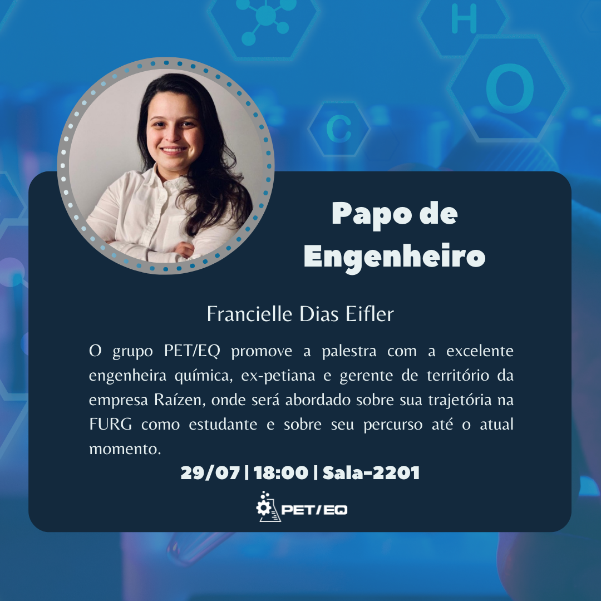

Reencontro com o PET/EQ
Enga. Química Francielle Dias Eifler
Em julho de 2022, a petiana egressa Francielle Dias Eifler retornou ao grupo PET/EQ para um Papo de Engenheiro sobre sua trajetória como petiana egressa e atual gernte de território da empresa Raízen.

Momentos do reencontro com o PET/EQ: